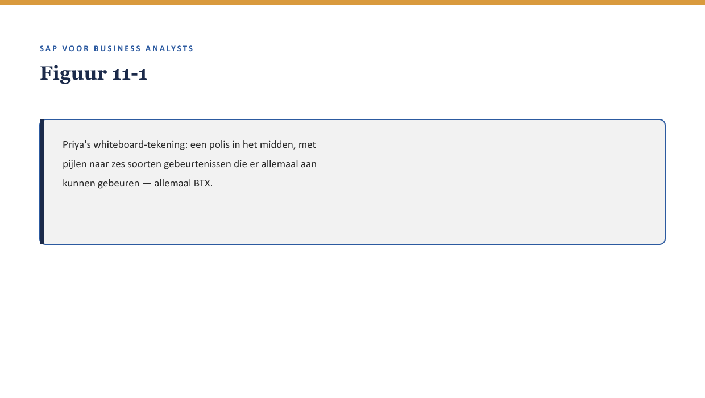
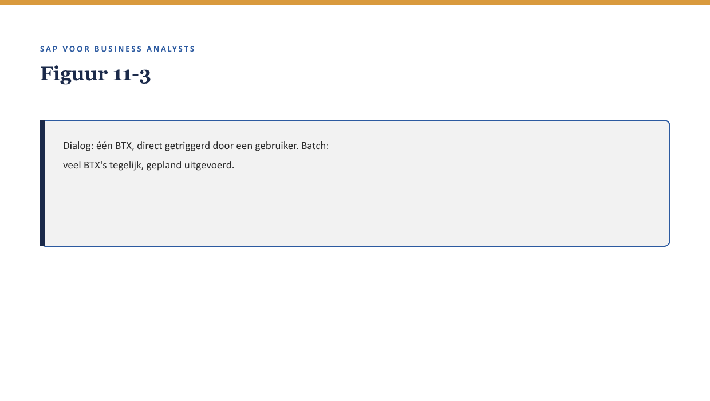

Deel 11 — FS-PM: het polisproces
Slidedeck · Niveau 2 Professional · Cursus SAP voor Business Analysts · Ductus
Slidetypen: titleSlide, sectionSlide, bulletsSlide, statementSlide, quoteSlide, tableSlide, figureSlide, opdrachtSlide.
Slide 1 — titleSlide
FS-PM: het polisproces Deel 11 · Niveau 2 Professional · Cursus SAP voor Business Analysts
Slide 2 — quoteSlide
“Alles wat er in FS-PM met een polis gebeurt, is een BTX. Als je dat begrijpt, begrijp je het hart van het systeem.” — Priya Chandra
Slide 3 — figureSlide

Slide 4 — bulletsSlide
Wat we vandaag doen
- Wat een BTX is
- Zes categorieën
- Dialog versus batch
- De fusiecase uit niveau 1, herzien
Slide 5 — sectionSlide
Zes categorieën
Slide 6 — figureSlide

Slide 7 — tableSlide
Zes categorieën
| Categorie | Betekenis |
|---|---|
| New Business | nieuwe polis |
| Change | wijziging |
| Universal Change | bulkwijziging |
| Reversal | terugdraaien |
| Renewal | verlengen |
| Termination | beëindigen |
Slide 8 — opdrachtSlide
Opdracht 11.1 — Categoriseer de BTX
Vijf gebeurtenissen, zes categorieën.
Slide 9 — sectionSlide
Dialog versus batch
Slide 10 — figureSlide

Slide 11 — quoteSlide
Elke keer dat je een BTX tegenkomt, is de eerste vraag niet “wat doet hij” maar “wanneer en hoe wordt hij getriggerd.” — Kernzin, reader §5
Slide 12 — opdrachtSlide
Opdracht 11.3 — De fusiecase herzien
Welke BTX-categorie(ën)? Dialog of batch?
Slide 13 — bulletsSlide
Samenvatting in vijf zinnen
- Een BTX is een expliciet vastgelegde gebeurtenis, geen simpele veldwijziging
- Zes categorieën dekken vrijwel elke polisgebeurtenis
- Universal Change maakt bulkwijzigingen traceerbaar
- Dialog is direct; batch is gepland en asynchroon-achtig
- BTX-vocabulaire preciseert eerdere, vage analyses uit niveau 1
Slide 14 — titleSlide
Volgende deel FS-PM: configuratie en rolverdeling Deel 12